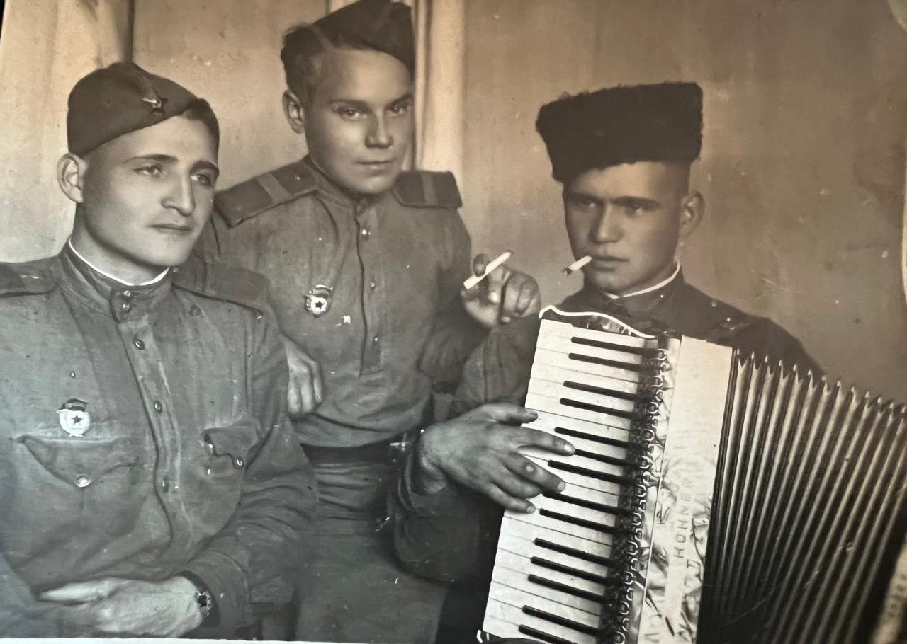
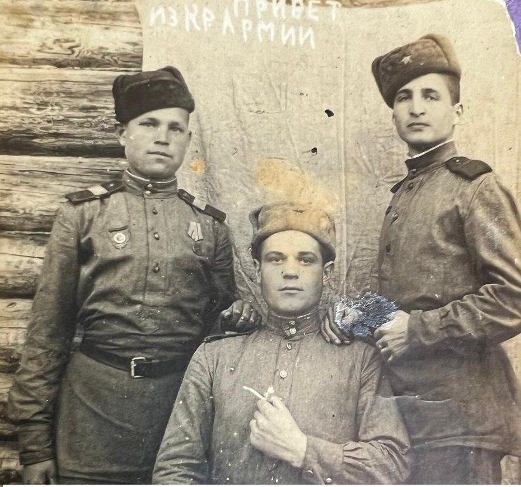

О проекте
Виртуальное музейное пространство «Бессмертный полк школы № 598»
Проект «Бессмертный полк школы 598» — скромный вклад школы в сохранение памяти о героях Великой Отечественной войны.
Здесь мы собрали истории родных наших учеников, педагогов и сотрудников — тех, кто воевал, трудился в тылу, пережил оккупацию и внёс свой вклад в Победу.
Это не парадные рассказы о подвигах, а личные истории, бережно хранимые в семьях. Истории о дедах и прадедах, бабушках и прабабушках, об их жизни до войны, о том, как они сражались, как ждали с фронта, как восстанавливали страну в послевоенные годы.
Это истории о людях, которые жили рядом с нами и чья жизнь стала частью истории нашей страны.
Мы хотим, чтобы эти истории не были забыты, чтобы новое поколение знало, какой ценой досталась Победа, и гордилось своими предками.
На этом сайте вы найдёте
Фотографии
Лица тех, кто сражался за мир.
Воспоминания
Записи из семейных архивов, рассказы о войне, пережитой родными.
Краткие биографии
Основные вехи жизни героев, их вклад в Победу.
Мы приглашаем всех, кто хочет поделиться историей своего героя, присылать нам материалы. Вместе мы сохраним живую память о тех, кто подарил нам мирное небо над головой.
Этот сайт — не памятник героям, а возможность сказать им «спасибо» и сохранить память о них для будущих поколений.

